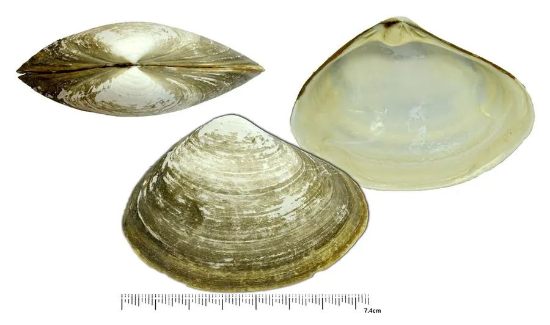

软体动物 · 动物界
北极贝 Mactromeris polynyma

北大西洋冷水海域的大型蛤类，壳厚而圆，足部肉色鲜红，常被称作北极贝，是日本料理中常见的贝肉。
- 分类
- 门软体动物门纲双壳纲目帘蛤目科马珂蛤科属马珂蛤属
- 栖息环境
- 北大西洋冷水海域的沙泥和砾石底质，水深数十米至一百多米
- 地理分布
- 北大西洋和北冰洋，从加拿大东岸、格陵兰至冰岛和挪威
- 保护级别
- 尚无专门评估；商业捕捞受配额管理
物种志
北极贝的贝壳呈三角卵圆形，壳长约八至十二厘米，壳质厚实，壳面呈黄白至灰褐色，有明显的同心生长纹和一层粗糙的角质皮，壳顶突出，壳缘光滑。它的足部大而侧扁，肌肉中含有大量血红蛋白，因而呈现鲜艳的红色，这也是它被称作北极贝的原因。水管较短，末端有触手，滤食时伸出沙面。两壳闭合紧密，遇到危险能迅速缩回沙中。
它分布于北大西洋和北冰洋的冷水海域，从加拿大东岸、格陵兰到冰岛、挪威，栖息在水深数十米至一百多米的沙泥和砾石底质，喜欢低温、水流较强的海底。它以浮游植物和有机颗粒为食，靠水管滤食，生长缓慢，寿命可达数十年。北极贝是北美和北欧重要的商业贝类，捕捞后多经急冻或煮熟切片销往亚洲，肉质脆甜，是寿司和刺身的常见食材。目前尚无专门的保护评估，资源主要受配额管理。
形态与习性
- 食性滤食浮游植物和有机颗粒
- 壳长约八至十二厘米，壳厚呈三角卵圆形
- 足部大而侧扁，因含血红蛋白呈鲜红色
- 栖息深度水深数十米至一百多米的沙泥砾石底
- 生长生长缓慢，寿命可达数十年
- 经济价值北美和北欧重要商业贝类，多切片出口
趣味知识
- 北极贝鲜红的足肉来自肌肉中的血红蛋白，并非人工染色。
- 它生活在接近冰点的海水中，生长缓慢，几年才能长到商品大小。
- 市场上常见的北极贝多是捕捞后急冻或煮熟切片的产品，很少见到活体。